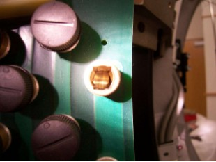

Illustration 3: Good Brush Alignment Example

The examples below show a good and bad brush block alignment. In the good example, the slip ring track is centered in the brush holder. In the example of a bad alignment, the edge of the slip ring track can be seen on the right side only.
Illustration 3: Good Brush Alignment Example
Illustration 4: Bad Brush Alignment example
